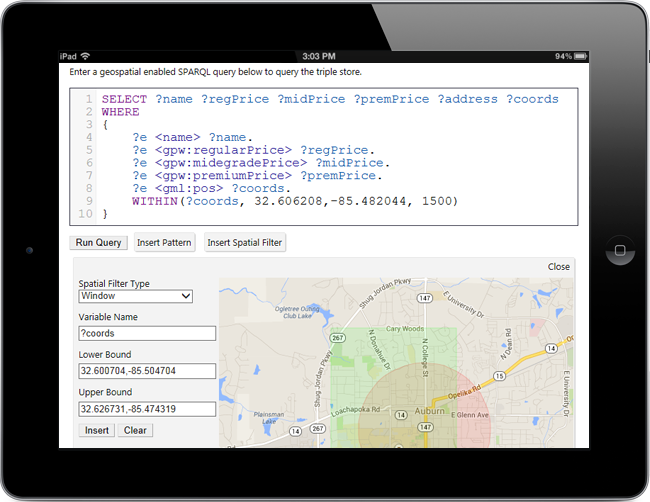

<div class="board" id="board-flw" align="center" style="margin-top:20px">
    

    <div align="left" class="desc">
        <p>Spatial data, represented as coordinates in <a href="http://en.wikipedia.org/wiki/Well-known_text" target="_blank">well-known text</a> format, often appear in semantic web data (RDF). However, the <a href="http://en.wikipedia.org/wiki/SPARQL" target="_blank">SPARQL Language</a>, the query language of semantic web, currently lack the specification for spatial filters.</p>

        <p>The purpose of the GeoStore project is to propose a specification for spatial operators (filters) in SPARQL, and to implement these filters with our own implementation of data store server.</p>

        <p>Spatial filters are implemented in our data server. When a query comes in from clients, the spatial-aware module looks for the costume filters, parse them. The query evaluator uses the query parameters to find the data with these constraints.</p>

        <p>In addition to the server, we also implemented a web-based client (shown in figure above). The client allows users to easily write SPARQL and spatial-aware SPARQL.</p>
    </div>
</div>